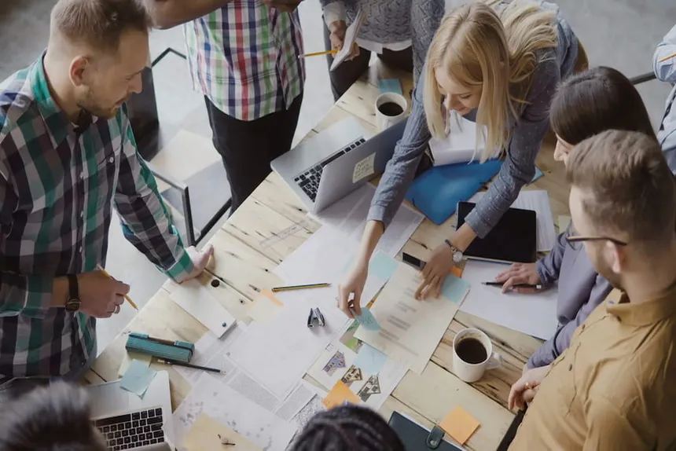

SpeciusTech
Tecnologia para transformar possibilidades em realidade.

Tecnologia para transformar possibilidades em realidade.
A SpeciusTech é uma equipe de desenvolvimento de software dedicada à criação de soluções inovadoras que conectam tecnologia, pesquisa e impacto social.
Nosso trabalho envolve explorar novas tecnologias e transformar ideias em projetos capazes de solucionar problemas reais. Buscamos combinar criatividade, desenvolvimento e conhecimento para construir experiências tecnológicas relevantes.
Atualmente, nosso principal projeto é o MoveAll, uma iniciativa que explora a integração entre interfaces cérebro-computador, imaginação motora e realidade virtual.
CONHEÇA O MOVEALL →